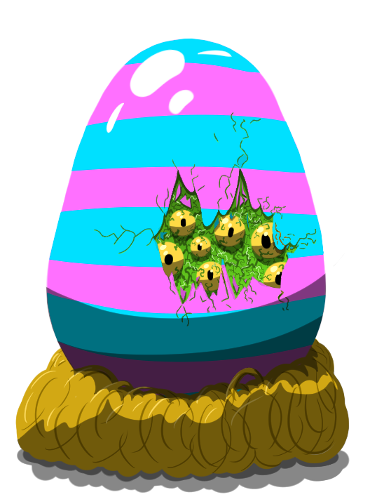
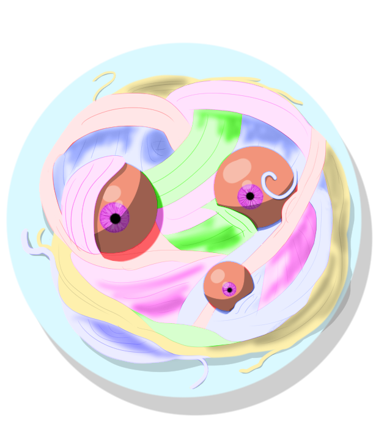
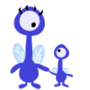
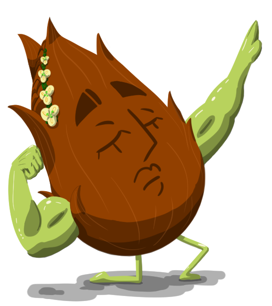

About Me

My name is DeLaney Jones, and I am studing at Lewis-Clark State College. I will graduate in 2020 with an Associates in Web Design and a Bachelors in Computer Science. Currently I work for Dr. Seth Long as a Research Assistant. We are working on a program called CASTER (Computer Assisted Segmentation Tool Enviroment Revisited). The goal of this program is to outline rod spherules within mouse eyes for further study. I have attended several research confrences to present our works, which as been well received.
In my free time I enjoy crochet projects, drawing turtles, and playing with my kitten. Sophia showed up in my backyard one day, and we have gotten really close. Right now, she's sprawled across my lap and naping. You'll notice that my portfolio is monster themed. For the last 4 years, I have been working on a children's learning app I call "Monster School." My goal is to have an app that provides children in preschool through second grade school subjects through a series of games. Each game will adress a topic such as reading or science that will progressivley get harder or easier based on the child's needs. I choose the monster theme becase you can't draw a monster wrong, and I wanted to provide an enviroment where the children felt supported and safe to express themselves.
Monster School
The goal of the Monster School series is to help children learn in a manner that works for them and at their own pace. This is going to be achieved by recording what the child is doing well with, and where they need more practice. After those spots are identified, the materials for the games are ajusted to suit those individual needs.
The other approach that is being incroperated into the system is appealing to the different ways of learning. Games for each major subject are presented in a way that uses audio, logic, visual, verbal methods. The only learning style that cannot be achieved by simply playing the games is interpresonal learning.
Each of the major school subjects such as reading, science, and art are explored through these games. It is not designed to replace classroom learning, but is designed to suppliment it and help encourage critical thinking. Some of the games are explored in the next section.

Monster Madness
This game target reading and phonics. It begins by helping people learn their alphabet and correlating sounds, then moves into teaching sight words. This is achieved via a see-hear-match-reward-repeat process, which has shown promising results.

Monster Munch
The target of Monster Munch is math. The players are given a monster to feed that requires X amount of food points. They need to use the food avaiable to them to meet those needs without over or under feeing the monster. Food items are presented on medalians, designed to help the player transition to understanding coins.

Monster Map
The tartet of this game is to help give students the base information they need for understanding geography and history. In this game, players travel around the world via a map. At each place they visit, they learn about something fun that can be done there, as well as a fun fact. Did you know you can find fish fossils in the Gobi desert?
My Education
I graduated Charles Fransis Adams High School, commonly known as CHS, in 2014. That same year I started college at Walla Walla Community College's Clarkston Branch. I spent one year there with the help of a College Bound Scholarship. Afterwards, I needed to take a year off for family and medical reasons. I began the following year, in 2016, at Lewis Clark State College where I am continuing my studies. I am going to obtain an Associates in Web Design and a Bachelors of Computer Science. In the sections that follow, I have listed some of the classes I have taken.
Hello!
These sections are all about how you can contact me and Lane, who does the artwork. Please, feel free to contact us. We would love to hear from you!

The Artwork
The artwork for this site and the Monster School series is done by Lane Lee. The images are based off of an artistic spin of monsters that my sister, Kyrie, and I created. If you would like to contact him regarding his art, please visit here.
My Contact Information
Phone: 000-000-0000
Email: dbjones2518 at lcmail.lcsc.edu
Facebook: View Here
LinkedIn: View Here
GitHub: View Here